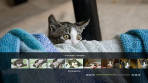
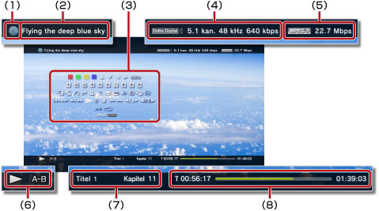

Video > Brug af kontrolpanelet
Brug af kontrolpanelet
Udfør forskellige handlinger vha. kontrolpanelet på skærmen. Tryk på  -tasten for at få kontrolpanelet vist eller skjult.
-tasten for at få kontrolpanelet vist eller skjult.
Nedenfor beskrives de ikoner, der vises på siden:
| Video, der er optaget på en skrivebeskyttet Blu-ray-disk (BD) | |
 |
Video, der er optaget på en genskrivelig BD |
 |
Video, der er optaget i AVCHD-format |
 |
|
 |
Video, der er optaget i VR-tilstand på DVD-R/DVD-RW |
 |
Videofiler, der er gemt på harddisken |
 |
Videofiler, der er gemt på lagermedier* |
| * |
Visse modeller kræver en bestemt USB-adapter (medfølger ikke) ved brug af lagermedier. |
|---|
Vigtigt
Noget indhold har muligvis afspilningsbegrænsninger, der er forudbestemt af udvikleren. I sådanne tilfælde er enkelte kontrolpanelpunkter muligvis ikke tilgængelige.
Røde/grønne/blå/gule ikoner
Udfør handlingerne svarende til ikonet. Funktionerne, der er knyttet til ikonet, varierer med indholdet.
Op/Ned/Venstre/Højre
Udfør
Nummerisk Tast
Pop-Up-Menu
Menu

Åbn menuen.
Top Menu
Tilbage

Tilbage til et bestemt sted i videoen.
Scenesøgning


Brug denne funktion til at se miniaturebilleder, der oprettes med et vist tidsinterval. Vælg et miniaturebillede for at starte afspilningen af videoen fra denne scene.

1. |
Brug |
|---|
 -tasten eller
-tasten eller  -tasten til at vælge det tidsinterval, der skal bruges ved oprettelse af miniaturebilleder. Du kan vælge [Kapitel] eller ét af flere tidsintervaller.
-tasten til at vælge det tidsinterval, der skal bruges ved oprettelse af miniaturebilleder. Du kan vælge [Kapitel] eller ét af flere tidsintervaller.2. |
Brug |
|---|
 -tasten eller
-tasten eller  -tasten til at vælge miniaturebilledet for den scene, du vil se. Afspilningen starter med den scene, du har valgt.
-tasten til at vælge miniaturebilledet for den scene, du vil se. Afspilningen starter med den scene, du har valgt.Tips
- Valgmuligheden [Kapitel] kan kun vælges ved videoindhold, der indeholder kapiteloplysninger.
- Scenesøgning kan ikke bruges på videoindhold, som varer under 1 minut.
- Scenesøgning kan ikke bruges på visse andre typer af videoindhold.
- Når du vælger et miniaturebillede, vises en forhåndsvisning af scenen i omkring 15 sekunder.
Gå til


Afspil fra et bestemt kapitel eller tidspunkt.
| Titel X | Angiv titelnummeret. |
|---|---|
| Kapitel X | Angiv kapitelnummeret. |
| XX:XX / XX:XX:XX | Angiv tidspunktet. |
Tip
Du kan muligvis ikke bruge (Gå til), afhængigt af videofilen.
Vinkelmuligheder
Vælg en af de tilgængelige betragtningsvinkler i forbindelse med indhold, der er optaget med flere kameravinkler.
Audiomuligheder
Vælg en af de tilgængelige lydindstillinger i forbindelse med indhold, der er optaget med flere lydspor.
Undertekst muligheder
Vælg en af de tilgængelige undertekstindstillinger i forbindelse med indhold, der er optaget med flere undertekstsprog.
Undertekst stil muligheder
Vælg en af de tilgængelige undertekstindstillinger i forbindelse med indhold, der er optaget med flere undertekstsprog.
Volume Kontrol
Juster lydstyrkeniveauet på indhold, der afspilles under  (Video). Vælg ét af ni niveauer.
(Video). Vælg ét af ni niveauer.
Tips
- Lyden kan blive forvrænget, hvis lydstyrken skrues for højt op. Hvis det sker, skal du skrue ned for lydstyrken.
- Denne indstilling bliver muligvis deaktiveret, når visse lydenheder anvendes, eller når visse lydtyper gengives.
AV-indstillinger
Gør det muligt at justere indstillinger for indholdsoutput, der afspilles under (Video). Tilgængelige elementer afhænger af indholdet.
| Frame Noise Reduction | Vælg dette for at reducere fin støj. |
|---|---|
| Block Noise Reduction | Vælg dette for at reducere mosaiklignende blokstøj, der vises på skærmen. |
| Mosquito Noise Reduktion | Vælg denne indstilling for at reducere den Mosquito Noise, der vises i kanten af billeder. |
| Opskalerer | Vælg denne indstilling for at opskalere output. Den angivne værdi vises i [Opskalering] under  (Indstillinger) > (Indstillinger) >  (Videoindstillinger). (Videoindstillinger). |
| Video Output Format | Vælg denne indstilling for at angive et videooutputformat. Vælg videooutputformat for afspilning af dvd'er eller BD'er. Den angivne værdi vises i [BD/DVD Video Output Format (HDMI)] under (Indstillinger) > (Videoindstillinger). |
| Y Pb / Cb Pr / Cr Superhvid | Vælg denne indstilling for at aktiverer superhvid. Der kan nu sendes et superhvidt signal som output, når der afspilles en dvd, BD eller AVCHD-disk. Den angivne værdi vises i [Y Pb/Cb Pr/Cr Superhvid (HDMI)] under (Indstillinger) >  (Skærmindstillinger). (Skærmindstillinger). |
| RGB fuld rækkevidde | Vælg denne indstilling for at vælge visning i RGB Full Range. Den angivne værdi vises i [RGB fuld rækkevidde] under (Indstillinger) > (Skærmindstillinger). |
| Dynamic Range Control | Vælg denne indstilling for at indstille Dynamic Range Control. Gør det muligt at aktivere eller deaktivere PS3™-systemets Dynamic Range Control-funktion under afspilning af BD'er og dvd'er, der indeholder Dolby Digital-lyd. Den angivne værdi vises i [BD/DVD Dynamic Range Control] under (Indstilling) > (Videoindstillinger). |
| Audio Output Format | Vælg denne indstilling for at angive et lydoutputformat. Vælg lydoutputformat for afspilning af dvd'er eller BD'er. Den angivne værdi vises i [BD / DVD Audio Output Format (HDMI)] eller [BD Audio Output Format (optisk digital)] under (Indstillinger) > (Videoindstillinger). |
Tidsmuligheder
Vælg, om du vil se forløbet tid eller resterende tid for en titel eller et kapitel. Oplysningsemnerne varierer i overensstemmelse med det indhold, der afspilles.
Skærmtilstand
Skift skærmtilstand.
| Normal | Vælg dette for at få vist videobilledet, så det passer til skærmstørrelsen, uden at proportionerne ændres. |
|---|---|
| Zoom | Vælg dette for at få vist videobilledet, så det passer til hele skærmstørrelsen, uden at proportionerne ændres. Dele af videobilledet foroven og forneden eller til venstre og højre fjernes. |
| Fuld skærm | Vælg denne indstilling for at få vist indholdet på hele skærmen ved at ændre proportionerne og strække billedet lodret og vandret. |
| Original | Vælg dette for at få vist videobilledet i dets oprindelige størrelse. |
Tip
Det vil afhængigt af videofilen muligvis ikke være muligt at ændre skærmtilstand.
Skift Ikon
Gør det muligt at udskifte det ikon (miniaturebilledet), der er tilknyttet en videofil. Afspil videofilen, og vælg (Skift Ikon) på det sted, hvor du får vist det billede, der skal vælges som ikon.
Tips
- Det vil afhængigt af videofilen muligvis ikke være muligt at ændre ikonet.
- En videofil, der er kortere end to sekunder, kan ikke bruges som ikon.
Slet
Gør det muligt at slette en videofil, der afspilles.
Vise
Få vist afspilningsstatus og andre relaterede oplysninger. Oplysningsemnerne varierer i overensstemmelse med det indhold, der afspilles.

(1) |
Medie |
|---|---|
(2) |
Titel |
(3) |
Kontrolpanel |
(4) |
Lyd-codec/kanalnummer/sampling-hastighed/bitrate |
(5) |
Video-codec/bitrate |
(6) |
Statusikon |
(7) |
Titel/kapitel |
(8) |
Forløbne tid/samlede tid |
Tidligere (begyndelse)/Næste
Gå til forrige eller næste kapitel.
Tip
Når der afspilles videofiler, som er gemt på et lagermedie eller på harddisken, vil  (Naeste) ikke være tilgængelig. Desuden vil valg af
(Naeste) ikke være tilgængelig. Desuden vil valg af  (Ticlligre) få afspilningen til at starte ved begyndelsen af videofilen.
(Ticlligre) få afspilningen til at starte ved begyndelsen af videofilen.
Hurtig Tilbage/Hurtig Fremad
Hurtigt baglæns eller hurtigt fremad i indholdet, der afspilles. Hver gang du trykker på  -knappen, ændres afspilningshastigheden.
-knappen, ændres afspilningshastigheden.
Afspil
Påbegynd afspilning af indholdet.
Tip
I de fleste tilfælde vil videoafspilningen begynde ved stoppunktet, næste gang du starter afspilningen af indhold, der er blevet stoppet under afspilningen.
Hvis du vil afspille fra starten, skal du trykke på PS-tasten for at stoppe afspilningen og åbne XMB™. Vælg ikonet, tryk på -tasten, og vælg derefter [Afspil fra Begyndelsen] i indstillingsmenuen.
Pause
Midlertidig pause i afspilningen.
Stop
Hurtig Replay/Hurtigt Billede
Gå til et sted i videoen, som ligger 15 sekunder bagud eller 15 sekunder fremad.
Langsomt (tilbage)/Langsomt (fremad)
Tidligere Billede/Følgende Billede
A-B gentag
Afspil en angivet del af indholdet gentagne gange.
1. |
Ved starten af indholdsdelen, der skal gentages, skal du vælge |
|---|---|
2. |
Ved slutningen af indholdsdelen, der skal gentages, skal du trykke på |
Tip
Hvis du vil ophæve A-B-gentagelsesfunktionen, skal du vælge (A-B Gentag).
Gentag
Afspil indholdet gentagne gange.
Tip
Hvis du vil ophæve Gentag-funktionen, skal du vælge (Gentag), indtil (Gentag Off) vises.